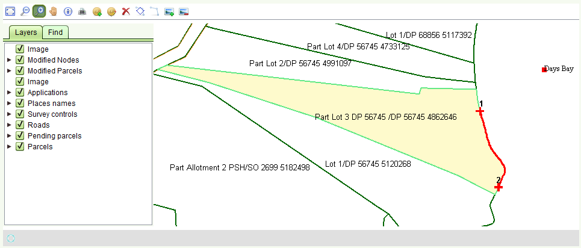

Changer Limite
Il est possible de modifier les limites entières soit d'une nouvelle parcelle (Service Modification Cadastre) soit d'une parcelle existante (Service Redéfinition du Cadastre).
En réalité, l'outil est conçu pour changer les limites entières des objets au lieu de points uniques.
Sélectionner la limite à modifier en utilisant l'outil Sélectionner la limite  ,
après avoir zoomé sur la parcelle à modifier.
,
après avoir zoomé sur la parcelle à modifier.
- Sélectionner un point qui sera le point de départ de la modification (il peut être un noeud existant ou un nouveau noeud ajouté)
- Sélectionner un point (dans le sens des aiguilles d'une montre) qui sera le point de fin de la modification (il peut être un noeud existant ou un nouveau noeud ajouté)
Ces points s'affichent dans le plan sous forme de croix verts au-dessus de la limite.
Le segment de limite qui sera modifié apparaît sous forme d'une ligne rouge.

Maintenant, sélectionner l'outil Modifier la Limite 
- Cliquer sur le point qui est le point de départ de la limite à modifier.
- Cliquer sur les nouveaux points faisant partie de la nouvelle limite.
- Double cliquer sur le point qui est le point de fin de la limite à modifier.
La nouvelle limite s'affiche en vert pale et l'ancienne en vert foncé.
Ainsi, la nouvelle limite peut être comparée à la précédente et les parcelles en questions seront attribuées du statut En Attente.

Avant la sauvegarde, il est possible de modifier la limite autant de fois que nécessaire. Il est également possible d'utiliser la liste des parcelles pour supprimer une nouvelle parcelle si une erreur est faite pendant la procédure.
Ajouter une Image pour la Modification ou Redéfinition du Cadastre
Il est possible d'ajouter une image directe dans le plan pour les deux services de Modification et Redéfinition du Cadastre en utilisant l'outil
 d'image directe.
Ces images de petites tailles ne sont utilisées que pour l'orientation dans le plan,
par exemple pour dessiner une autre limite, non pas pour charger une image satellite.
d'image directe.
Ces images de petites tailles ne sont utilisées que pour l'orientation dans le plan,
par exemple pour dessiner une autre limite, non pas pour charger une image satellite.
- Cliquer pour définir le coint bas-gauche de l'image (un 'X' vert apparait à l'endroit du clic)
- Cliquer pour définir le coint haut-droit de l'image (un 'X' vert apparait à l'endroit du clic)
- Choisir une image (jpg, jpeg, png, tif) depuis la boîte de dialogue de fichiers chargés (l'image doit s'ouvrir)
- Définir le premier point de l'image en cliquant (un 'X' vert apparait à l'endroit du clic)
- Définir le deuxième point de l'image en cliquant (un 'X' vert apparait à l'endroit du clic)
- Cliquer OK
L'image s'affiche directement dans le plan (pas besoin de géo-référencement)
Il est possible de supprimer l'image ajoutée en utilisant l'outil Supprimer Image Ajoutée 
Il y a aussi un calque dans l'onglet Calque appelé "Image" qui peut être utilisé pour afficher ou cacher l'image du plan.
Voir aussi